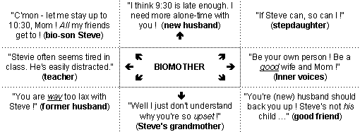

Loyalty conflict resolution options, continued...
The Web address of this page
is http://sfhelp.org/fam/lc_sf.htm
Updated
3-16-2015
 More Options for
Divorcing Families and Stepfamilies More Options for
Divorcing Families and Stepfamilies
Recently, it's estimated that over
half of American biological families divorce legally or
psychologically. My research as a family-systems therapist for
36 years suggests
for this personal and cultural tragedy. Few average people can describe
them. Can you?
 Perspective Perspective
Loyalty (and other) conflicts in
typical
families and
are significantly more frequent, complex, and
stressful than in intact biofamilies because...
-
suggests that mates and
their family members are significantly
and
- and most
stepfamilies evolve after one or more divorces (vs. mate death);
-
divorced parents may be hostile and
distrustful of each other for months or years, and are forced to relate because of
their kids. Effective
co-parenting may be hindered by up to nine relationship
they don 't know how to resolve. This promotes major conflicts and
relationship
among ex mates, kids, relatives, and supporters.
-
the multi-year process of
divorce inevitably creates major
(broken bonds) for all adults and kids. Paradoxically,
forming a stepfamily
creates more significant losses for most members. Can you name some?
-
Wounded, unaware people often have trouble
admitting and grieving their losses well. This promotes relationship
conflicts and triangles
-
Typical dating single parents
must choose - often - "Who comes first with me - my child, or my new
mate?" Non-step
people often can't empathize with the agony of this (usually unexpected)
forced choice. Grandparents must prioritize loyalties between new and former
in-laws and bio and step kids and grandkids.
-
Children in divorcing families must often choose which bioparent
to side with. When either or both parents find a new partner,
kids must choose between two bioparents and a new stepparent - or between biosiblings and stepsiblings. This creates webs of overlapping
loyalty conflicts and triangles.
-
Typical stepfamilies are composed of
than intact biofamilies. They evolve from
three or more unrelated multi-generational biofamilies with different
values, traditions, and customs. New stepfamily adults and kids have ~30
adjustment tasks to master that biofamily
adults don't face. Negotiating them guarantees major conflicts
and triangles among adults and kids.
-
Normal stepfamilies may have to 15 alien new
to define and stabilize - usually without informed, empathic help. This
promotes overlapping conflicts and triangles among all family members.
And
loyalty conflicts are more stressful because...
-
Wounded, unaware adults and kids often deny,
minimize, or reject their
as a normal
stepfamily. This
fosters unrealistic expectations, conflicts, and triangles.
How many divorcing and remarrying adults and their relatives do you think
could clearly explain what you just read? How many mental health pro's,
including clergy? Understanding these and related factors is essential in
wise divorce planning and avoiding significant family stress and heartache!
| When workable compromises
aren't found and stepfamily mates don't consistently rank their primary relationship
(after wholistic health and personal integrity),
loyalty conflicts, triangles, and
undermine
their family relationships and bonding over time. This promotes a low
(dysfunction) and psychological and
legal re/divorce trauma. |
Typically, this is because stepparents
weary of
feeling second-place or lower to their stepkids and/or their spouse's ex
mate. Conversely, bioparents tire of feeling endlessly in the middle of lose-lose stepfamily
Without
an effective strategy to prevent and resolve loyalty conflicts and
triangles, mates lose hope of positive change,
and begin to drift apart.
Let's review some
realities about typical divorcing and step family loyalty
or priority clashes before seeing how to avoid and resolve them.
Realities
Loyalty conflicts are
built in to the structure of
typical multi-home divorcing families and stepfamilies. When they happen,
is
"wrong" or "bad"!
Courtship experiences are usually
a reliable guide to the frequency, nature, and outcomes of
typical loyalty conflicts and associated triangles.
Major conflicts often start to bloom around cohabiting, and/or
commitment announcement and ceremony.
Or they may first start to appear when a courting couple takes their first
vacation or has their first group holiday celebration with their stepkids and kinfolk.
Starting in courtship,
stepfamily
bioparents must choose often who's needs are more important to them at the
moment. "Choosing not to choose" is not an option, for it leaves
all
people feeling unclear and undervalued. Because this is often an agonizing reality to
accept, many bioparents are creative in finding ways to avoid it.
Stepparents have a
right to
ask their bioparent-mates to choose between "siding with" (supporting) them
vs. their biochild, ex mate, or ex-mate's kin. Insecure
stepparents who are confused in their family role can feel painfully guilty ("it's my
fault - I am being selfish in forcing my mate to choose...")
if their mate
accuses them of being "selfish" or "childish" in complaining about
feeling "second place."
stepparents from
low-nurturance (traumatizing) childhoods are specially at risk of this misplaced guilt
and shame and/or
of overreacting with blame and outrage.
One exasperated biodad
earnestly assured his new wife and biokids "You're
all first
with me!" (implication: "Wife, you're not getting my reality, so your 'feeling
second-place' is your fault"). His wife didn't feel
first, and wasn't feeling heard, respected, or reassured.
Everyone
in an average
divorcing family and stepfamily will feel
"caught in the middle" from time to time, including kids, relatives, ex
mates, stepparents, bioparents, and supporters. The most common example is a bioparent wanting to (or feeling
expected to) please their new mate and a biochild,
and feeling unable to do that. Do you know anyone who's
experienced this? How did they cope?
Usually
there are more than two people pulling on the person in the middle. If you were the
biomom below, how would you feel? What would you do? To anyone in
the middle of such a tangle, any choice seems sure to displease someone important to them.
This typically promotes guilt, frustration, self-doubt, ambivalence, indecision, and
perhaps anger - specially if it's the "500th time" they've felt n
this impossible position.
A Typical Eight-way Stepfamily Loyalty Conflict

People not in a stepfamily, including most
mental-health professionals, usually won't be able to empathize or effectively advise
on resolving these complex emotional dilemmas. Because of wounds, pride, and/or
they often can't acknowledge that.
There is
a best way for divorcing-family and stepfamily adults to cope with these inevitable
dilemmas,
but many find it hard to do!
.
Example
Here's
how this process sounds in a typical stepfamily
where all
three members feel that they're OK, and
in worth. Here's the scene: Bill,
14, finishes dinner before his mom Sarah and new stepdad Sam do. As the boy starts to leave the
table, Sam asks him to stay until the adults finish. Bill looks at his mother and
says...
Bill: "Do I have to Mom?" (stay per Sam's request);
Sarah takes charge, and calmly names the problem: "Bill, sit down a
minute and help us, please. We've got another loyalty conflict here. You want to leave
right now (respectfully affirms him). How come?"
Bill defines his needs: "I want to call Carl about the game
tomorrow, and I have a ton of homework. Be-sides - excuse me, but listening to you guys is
not always the most exciting thing, you know? And you eat so
slow!"
Here
many adults - specially
of low-nurturance childhoods - would semi-consciously feel attacked and
disrespected, rather than decoding
Bill's message as information about legitimate needs?
Without Self control and awareness, feeling attacked
by someone (and/or by your
causes hurt, irritation, defensiveness, blaming, blocked listening, and
escalating
("fights") about (a) who's
right and (b) who's going to get their way
(win/lose).
Sarah (grinning): "So you want to check in with Carl, get at your
work, and not get bored, eh? OK, fair enough (affirms his needs with
without agreeing, judging, arguing, or commenting).
Hang in here a few minutes and help us, please. Sam, why do you want Bill to stay?"
Sam: "Well, dinner's one of the few times we're all together. It
just feels good to me that no one leaves until we're all done. That includes me! I always
had to stay at the table when I was a kid - I guess it just doesn't feel right that people
scatter. I feel it's, uh, disrespectful."
Bill: "But Mom, I've never had to stay
before (Sam
came)...";
Sarah: "I know, Hon. This is new for all of us!
(Her
listens
without taking sides, and stays focused on the process). So Sam, you need us to
feel like a family, and sticking together at dinner is an important way of doing that, for
you" (uses empathic-listening skill to affirm his
needs, without agreeing, judging, or commenting);
Sam (feeling heard and
respected): "Yeah. I feel
like we're all always racing around, and this is one of the few times we can all be
together and catch up." He isn't aware of his underlying primary
need to feel like an ideal "normal" (bio)family.
Sarah (smiling, without sarcasm or blame): "Guess what, guys.
I'm feeling caught
again.
I guess we need to find some kind of new rule
for mealtimes, huh?" She pauses to reflect, and then says
"I
need each of us to feel clearly heard now, and to find some way to make
this work for each of us so I can get out of the middle. What choices do you see here?" (Mutually-respectful
As Sam and Sarah finish eating, all three
come up with several options for lower-stress dinner times. The
adults' share an attitude of
"our respective dignities and needs are of
importance, now" They settle on Bill agreeing to usually stay for about
10 minutes, maximum, if he finishes dinner first.
The adults agree to intentionally
include the boy more (i.e. to listen to him with real interest) in their table
talk, and save most "boring" adult topics for their own time. This
is a double compromise acceptable to each of them
Note: if
Sam and Sarah have made too little couple-time, this
resolution probably wouldn't work. They
also
all agree that there will be exceptions when Bill can leave quickly, and when the
adults need to talk "boring stuff" with him present. This
flexibility avoids
stresses from rigid black/white rule-enforcement.
+ + +
This simplified example shows a co-parent
respectfully negotiating
conflicting needs nonjudgmentally, and three family members forming a
tentative new household
together. Sam could have initiated and led this process too.
Bill's "job" here is to...
-
identify and assert his current needs,
-
accept the adults' needs
as equally legitimate;
-
participate patiently in this win-win process, and...
-
learn how to lead it himself.
All three people felt heard and respected enough,
and no one felt blamed, guilty, or defensive. This discussion took about 10 minutes,
which Bill could tolerate. It strengthened everyone's experience and faith in their
problem-solving ability, and increased their feeling like a win-win team. They had done
this process before, together, so all had some trust it could work for each of them.
Other co-parents who
didn’t have
or a mutual-respect attitudes might
have had either adult "pull rank" and their needs without
mutual discussion: "Bill, sit down and stay here 'til we're done. Period.";
or Sarah saying "Go ahead and leave, Bill. I'll straighten Sam out."
Both
responses promote stressful lose-lose-lose
When all family adults see loyalty
and other conflicts as shared family problems rather than battles or power struggles one
member must fix or win, working together patiently to
meet
everyone’s
enough
grows strong
couple and family bonds over time.
Do
you agree? If so, do you do mutually-respectful win/win compromising like this now?
This example is ideal.
What if the boy had pressed his needs? For instance:
Bill: "But Mom, Carl's leaving tonight for the weekend, and I
have to call right now!"
Either co-parent could flex,
respect Bill's
immediate needs, and say ...
"Well, OK, Bill. We'll work on ideas for a new
dinner guideline for us while you do that. We'll pick this up tomorrow night at
dinner." (a win/win compromise). Or ...
"OK, call Carl, and then please come back and join us for a few minutes while we
work on this together."
An
impatient, distracted, or
inflexible adult might use lose/lose power
tactics,
and say "No! 10 minutes won't kill you. Now stick around 'til we finish."
Implication: "My
needs are more important than yours now - I'm 1-up!"
Bill would probably feel disrespected (a
hurt and resentful - specially if this was a regular pattern. He'd hardly feel
like cooperative problem-solving or a co-equal family
member.
In real life, all people
can't
always get their key needs met well enough. Notice which members of your family
or organization usually seem to get their key needs met most often over time. When
people
consistently feel genuine respect for themselves and each other ("your
dignity and needs and mine are equally
legitimate and important now"), win-win compromising is most likely.
| If members of a family
or other group are significantly
and
consistent
win-win
will be elusive until their true Selves lead their
personalities, and their self and mutual respects improve. |
Useful
Questions
When you have trouble achieving win-win problem-solving, research questions
like these to help raise your success:
-
"Who among us has been getting their needs met most often, recently?
The least? Is that OK with everyone?";
-
"Who
right now -
specifically?"
-
"What are our options here?"; and…
-
"If
we can't find a win-win way together, what choice is
for our
adult relationship?
Loyalty clashes are a kind of
Values conflicts are inevitable, and occur when two people hold different beliefs,
perceptions, and/or priorities. One co-parent is firm with kids, while the other is
permissive. A child likes
rock music, while a co-parent likes symphonies.
No one is right - we just have
different
tastes, opinions, and preferences.
| Relationship
stress blooms when one adult or child
feels another is imposing their values, preferences, and/or local needs in a way that
disrespects, hurts, or deprives them and/or another important other person
of equal consideration and respect. |
When
two co-parents feel and assert "I’m right
(1-up), and you’re wrong (1-down)," kids get
trapped in the middle, creating a loyalty conflict and probably one or
several
When an adult tries to manipulate, shame, reason, or force their partner
into adopting their parenting values, problem-solving vanishes, and toxic loyalty conflicts
and triangles flare.
Internal Conflicts
Notice that it’s easy for you to
have values conflicts all by yourself! One
personality subself can say "C’mon - fight to convert Bill to our way of
doing household chores. Don’t give in!"; while another
inner
voice (subself) says "Hey - if you compromise and give in some, the long-range payoff is
a happier marriage and family. That’s worth a lot more - so cool it!"
Who
usually wins your internal values conflicts -
your "immediate gratification" subself, or your wise "long-range-payoff"
subself? Do you like the results?
If you find your subselves in an abstract
values conflict, vs. disagreeing over something tangible like a car, phone, or pet,
stay aware that "agreeing to disagree" and mutually-respectful compromising strengthens
relationships and Self respect.
Trying to sell or convert someone else to your
values is like a Catholic and a Baptist trying futilely to convince each other that their
way is better and "the truth." Parenting
values are a kind of religion (a set of beliefs), based on early experience, faith, and ideals; and
motivated powerfully by love for one or more kids, and adult self-respect.
Part of a stepfamily's challenge is that
there are usually
co-parents who usually have very different
parenting "religions." Some far-seeing co-parenting teams
can learn to live together in respectful disagreement, or even harmony (!).
For
millions of
U.S. (and other?) co-parents ultimately seem to be
happier living psychologically or physically apart. Numberless others silently endure
depleting, frustrating family relationships because they
see no viable options. They don't know
about these
Note that Lesson 4 in this Web site includes
resources for divorcing couples, and Lesson 7 provides resources for
stepfamily adults and kids.
Recap
This
two-page article offers perspective on a common relationship stressor -
loyalty conflicts. It proposes a long-range strategy for resolving them
in any family, and then adds perspective on why these conflicts are
specially common in divorcing families and stepfamilies. The article
closes with additional resolution options for members of those families.
 Next
- Learn how your family handles loyalty conflicts
now. Then
review options for resolving values conflicts
and relationship triangles. Next
- Learn how your family handles loyalty conflicts
now. Then
review options for resolving values conflicts
and relationship triangles.
+ + +
Pause, breathe, and reflect - why did you read this article? Did you get
what you needed? If not, what
you need? Who's
these questions - your
or
 Prior page
/
Lesson 5
/
Print page
Prior page
/
Lesson 5
/
Print page

site
intro / course outline /
site search /
definitions / chat
/ contact
|